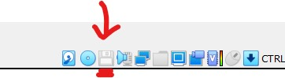
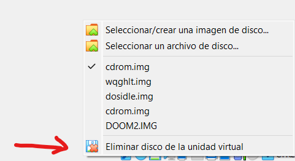

Como comenté en la pagina sobre comandos, en el apartado de unidades (Que puedes consultar aqui), necesitaremos simular la existencia de una unidad para poder cargar software que se encuentra en otros archivos diferentes a los habituales.(Como podemos ver en la pagina sobre Carga e Instalacion del Software). A continuación, vamos a ver su instalación:
Debemos ir a Documentos y crear una carpeta llamada MS-DOS Software, donde almacenaremos todo lo que iremos introduciendo en MS-DOS.
A continuación, encontraréis un enlace para descargaros todos los drivers que necesitaremos para utilizar MS-DOS de manera satisfactoria en nuestra maquina virtual. Una vez lo descarguéis, teneis que descomprimir la carpeta, y guardarlo en la carpeta que hemos creado anteriormente.
Ahora necesitamos cargar estos archivos a nuestro MS-DOS instalado en VirtualBox. En un ordenador con el sistema operativo instalado de forma nativa, es decir, un ordenador de la época sería tan fácil como meter un disquete o un CD, pero nosotros debemos hacerlo mediante las opciones que nos da VirtualBox. Como los dos archivos que tenemos son .IMG, eso significa que se pueden cargar en la unidad de disquete (De esto hablo más en profundidad en el apartado de Instalacion de software) Para hacer esto, tenemos que iniciar la maquina virtual de MS-DOS, y una vez ha cargado todo, presionaremos lo siguiente:
Este simbolo que vemos es el que nos hace referencia a la disquetera. Para acceder a ella, haremos clic derecho sobre ella, y se nos abrirá un desplegable.
Una vez seleccionamos la opción de la pagina de arriba, se nos abrirá una ventana del navegador de archivos. Buscaremos la carpeta donde se encuentran los drivers, y una vez dentro, seleccionamos el archivo cdrom.img. Una vez lo seleccionemos, veremos como el simbolo del disquete se encuentra más marcado. Ahora, dentro de MS-DOS nos cambiamos a la unidad A:.Si no tienes claro el tema de las unidades de MS-DOS, te recomiendo que repases el apartado de unidades. Dentro de la unidad hacemos un dir, y veremos que disponemos de un archivo llamado install.exe
Texteamos su nombre y hacemos enter. Entonces nos saldrá la siguiente pantalla:
Presionamos enter para continuar con la instalación. Entonces nos aparecerá una pantalla donde nos mostrará que se está instalando, y posteriormente un mensaje que nos dirá que la instalación ha sido satisfactoria. Presionamos enter, y saldremos del instalador. Ahora, para comprovar que funciona correctamente, nos cambiamos al directorio D:. Si esto se produce, hemos instalado todo correctamente.
Pese a que MS-DOS no tiene soporte nativo para ratón o mouse, si que existen drivers que nos permiten implementar esta función. Para instalar esto, hacemos click derecho sobre el icono del CD
Seleccionamos la opcion del desplegable de Seleccionar un archivo de disco (la misma que en el apartado anterior sobre la instalación del driver del lector de CD), y entonces seleccionamos MOUSE.ISO, que es el driver. Entonces nos movemos a la unidad de CD (D:), y hacemos dir. Veremos que solo nos encontramos un archivo llamado MOUSE.COM. Para instalarlo solo debemos ejecutarlo, y una vez damos enter, nos saldrá un mensaje como el siguiente:
Si queréis probar si funciona correctamente, podeis ir a la unidad C:, abrir un archivo de texto con edit, y vereis como podeis moveros por su intefaz con el ratón.
IMPORTANTE!! Este driver del ratón a veces puede "desactivarse" automaticamente al apagar la maquina virtual. Es por eso, que recomiendo copiar el driver a la unidad C:, y cada vez que iniciéis la maquina, lo ejecutéis para aseguraros de que funcione correctamente. Si no os acordáis de como copiar archivos, os recomiendo que miréis el apartado sobre Copia de archivos.
Una cosa que debemos tener en cuenta es que a la hora de encender MS-DOS, debemos dejar siempre vacía la unidad de disquete (Como veremos en el apartado de Instalacion de software). Para hacerlo es tan fácil como hacer click derecho sobre el disquete de la esquina derecha inferior, y entonces:
Con este último paso hemos acabado con la instalación de drivers.